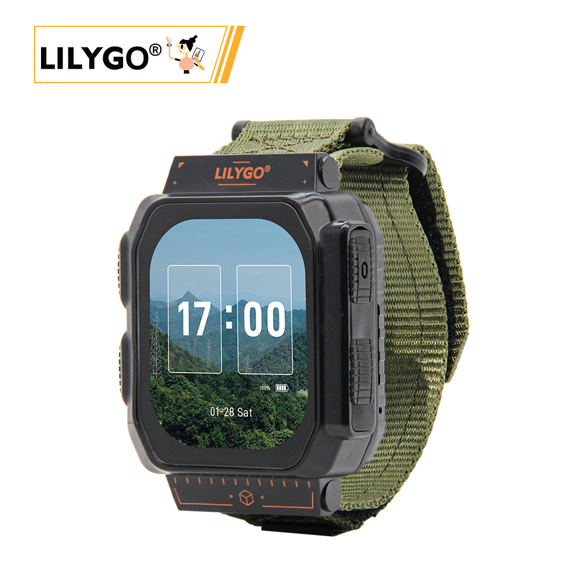
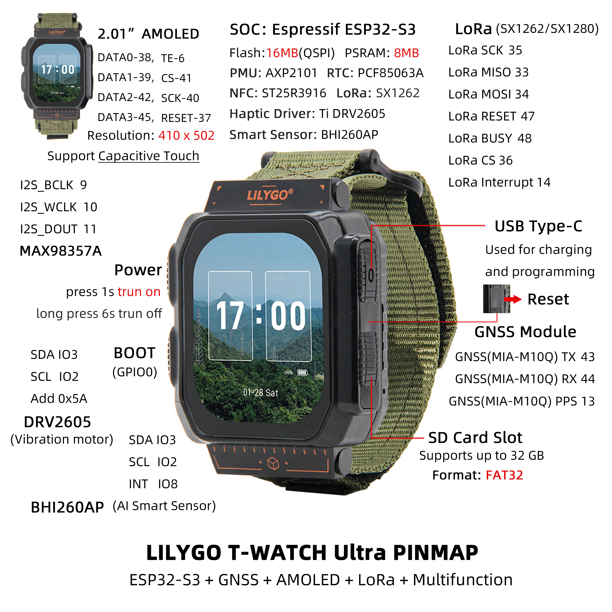

中文 简体
中文 简体LILYGO T-Watch Ultra

版本迭代:
| Version | Update date | Update description |
|---|---|---|
| T-Watch-Ultra_V1.0 | 最新版本 | 高性能智能手表开发模组初始版本 |
购买链接
| Product | SOC | FLASH | PSRAM | Screen | LoRa | GNSS | Link |
|---|---|---|---|---|---|---|---|
| T-Watch Ultra | ESP32-S3 | 16M | 8M | 2.06" AMOLED | SX1262/SX1280 | MIA-M10Q | LILYGO Mall |
目录
描述
LILYGO T-Watch Ultra 是一款高性能智能手表开发模组，基于 ESP32-S3 双核处理器，搭载 16MB 闪存与 8MB PSRAM，支持 Arduino/ESP-IDF/MicroPython 开发环境。核心功能高度集成：
- 显示交互：配备 2.06英寸 AMOLED 屏（410×502分辨率，1600万色），支持电容触控与 QSPI 高速渲染
- 四重无线通信：集成 Wi-Fi/BLE 5.0、LoRa（SX1262/SX1280，覆盖433/868/915MHz频段）、GNSS定位（MIA-M10Q模块）及 NFC（ST25R3916）
- 智能感知与反馈：内置 BHI260AP AI动作传感器、DRV2605触觉震动马达及 MAX98357A音频功放，实现运动识别与多模态交互
- 扩展与续航：支持 MicroSD卡扩展（32GB FAT32），由 AXP2101电源管理芯片动态优化能耗，搭配 1100mAh电池（4.07Wh）
- 工业级设计：紧凑尺寸（49×63.5×22mm），宽温域运行（-40℃~85℃），适用于户外运动设备、工业物联网网关等场景
预览
实物图

引脚图

模块
MCU
- 芯片：ESP32-S3
- PSRAM：8MB (Octal SPI)
- FLASH：16MB
- 架构：双核 Xtensa LX7
- 无线：Wi-Fi 802.11 b/g/n + Bluetooth 5.0
屏幕
- 尺寸：2.06英寸 AMOLED
- 分辨率：410x502px
- 屏幕类型：AMOLED
- 色彩：1600万色
- 接口：QSPI
LoRa
- 芯片：SX1262 / SX1280（可选）
- 频率：433-923MHz (SX1262) / 2.4GHz (SX1280)
GNSS 定位
- 芯片：MIA-M10Q
- 特性：多星座 GNSS 接收器
AI 传感器
- 芯片：BHI260AP
- 类型：AI 动作传感器
- 特性：支持复杂运动识别
NFC
- 芯片：ST25R3916
- 功能：近场通信
音频
- 功放：MAX98357A
- 接口：I2S
电源管理
- 芯片：AXP2101
- 电池：1100mAh 锂电池
- 充电：USB Type-C 5V
扩展接口
- IO扩展：XL9555（16个扩展IO接口）
- 存储：MicroSD卡（最大32GB）
通话模块
- 芯片：T3902
- 功能：语音通话支持
概述
| 组件 | 描述 |
|---|---|
| MCU | ESP32-S3 双核处理器 |
| FLASH | 16MB |
| PSRAM | 8MB (Octal SPI) |
| 屏幕 | 2.06英寸 AMOLED (410×502) |
| 触摸 | CST9217 电容触摸屏 |
| LoRa | SX1262 (433-923MHz) / SX1280 (2.4GHz) |
| GNSS | MIA-M10Q 多星座定位 |
| NFC | ST25R3916 |
| AI传感器 | BHI260AP 动作传感器 |
| 音频 | MAX98357A 音频功放 |
| 振动马达 | DRV2605 触觉反馈 |
| 电源管理 | AXP2101 PMU |
| RTC | PCF85063A 实时时钟 |
| IO扩展 | XL9555 (16个IO) |
| 通话模块 | T3902 |
| 存储 | MicroSD卡扩展 |
| 电池 | 1100mAh 锂电池 |
| 无线 | Wi-Fi 802.11b/g/n + Bluetooth 5.0 |
| USB | 1 × USB OTG (Type-C接口) |
| 按键 | POWER + BOOT (内置) |
| 尺寸 | 63.5×49×22mm (不带表带) |
快速开始
示例支持
| Example | PlatformIO/Arduino | ESP-IDF | Description |
|---|---|---|---|
| Watch UI | ✓ | 手表界面示例 | |
| GNSS Tracking | ✓ | 卫星定位功能 | |
| LoRa Communication | ✓ | LoRa 通信测试 | |
| AI Sensor | ✓ | 动作识别示例 | |
| NFC Reader | ✓ | NFC 功能演示 |
Arduino
Open
Arduino IDE->Sketch->Include Library->Add .ZIP Library->Select the library compressed package downloaded in step 3
- 将 LilyGoLib-ThirdParty 中的所有目录复制到 ArduinoIDE 的库目录中，如果没有“libraries”目录，请创建它。
- 请注意，不要直接复制“LilyGoLib-ThirdParty”目录，而是将“LilyGoLib-ThirdParty”目录中的文件夹复制到库中。
- 如何在您的计算机上找到自己的库的位置，请参考此处
- Windows：
C:\Users\{用户名}\Documents\Arduino - macOS：
/Users/{用户名}/Documents/Arduino - Linux：
/home/{用户名}/Arduino
请注意，LilyGoLib-ThirdParty 中的库并非一定是最新版本。在确认硬件运行正常之前，请不要升级依赖库的版本。
每次打开 ArduinoIDE 时，它都会提示有新的库版本可供升级。
在尝试更新到最新版本之前，请先确认其运行正常。如果遇到问题，请回滚到正常运行的依赖库版本。当前依赖库版本的列表可查看 此处
- “
File->Examples->LilyGOLib->helloworld Tools->Board->esp32,请从下面的表格中进行选择。
| Arduino IDE Setting | Value |
|---|---|
| Board | LilyGo T-Watch-Ultra |
| Port | Your port |
| USB CDC On Boot | Enabled |
| CPU Frequency | 240MHZ(WiFi) |
| Core Debug Level | None |
| USB DFU On Boot | Disable |
| Erase All Flash Before Sketch Upload | Disable |
| Events Run On | Core 1 |
| JTAG Adapter | Disable |
| Arduino Runs On | Core 1 |
| USB Firmware MSC On Boot | Disable |
| Partition Scheme | 16M Flash(3M APP/9.9MB FATFS) |
| Board Revision | Radio-SX1262 |
| Upload Mode | UART0/Hardware CDC |
| Upload Speed | 921600 |
| USB Mode | CDC and JTAG |
- 板载版本选项，请根据所购买的实际射频类型进行选择。目前的选项有：
- Radio-SX1262（1G 低频射频）
- Radio-SX1280（2.4G 低频射频）
- Radio-CC1101（1G（G）MSK、2（G）FSK、4（G）FSK、ASK、OOK）
- Radio-LR1121（1G + 2.4G 低频射频）
- Radio-SI4432（1G ISM）9. 选择“端口”10. 点击“上传”，等待编译和写入完成。11. 如果您无法上传草图或者 USB 设备一直出现在电脑上，请手动将该设备切换至下载模式。
- 如果串口没有输出任何信息，请检查“USB CDC 在启动时启用”是否设置为“启用”。
- 板本版本会根据实际的射频模块型号而变化。当前默认版本是 SX1262。
- 该库依赖于最新的 arduino-esp32 版本。如果低于 V3.3.0-alpha1，将会报错。
T-Watch-S3-Ultra 进入下载模式
🤖 USB 接口总是频繁地插拔吗？
如果您安装了第三方固件（例如 meshtastic），请务必按照以下步骤更新固件，无论它是 meshtastic 固件还是 lilygo 工厂固件。>
只有在程序不允许上传代码的情况下，才需要启用下载模式。在正常情况下，无需进行此步骤。>
按照以下步骤操作，即可将您的设备切换至下载模式。
- 通过 USB-C 数据线将板子连接起来
- 按下并持续按住 BOOT 按钮，在此期间同时按住RST按钮
- 放开RST按钮
- 松开 BOOT 按钮
- USB 接口应已固定，不会再闪烁。您可以点击上传。
- 按下RST按钮以退出下载模式>
如果新代码编写成功，但设备没有亮起或出现其他故障，请使用我们的工厂测试代码来测试外围设备是否能正常工作。请点击此处下载固件并进行测试编写。>
开发平台
引脚总览
| Name | GPIO NUM | Free |
|---|---|---|
| SDA | 3 | ❌ |
| SCL | 2 | ❌ |
| SPI MOSI | 34 | ❌ |
| SPI MISO | 33 | ❌ |
| SPI SCK | 35 | ❌ |
| SD CS | 21 | ❌ |
| SD MOSI | Share with SPI bus | ❌ |
| SD MISO | Share with SPI bus | ❌ |
| SD SCK | Share with SPI bus | ❌ |
| RTC(PCF85063A) SDA | Share with I2C bus | ❌ |
| RTC(PCF85063A) SCL | Share with I2C bus | ❌ |
| RTC(PCF85063A) Interrupt | 1 | ❌ |
| NFC(ST25R3916) CS | 4 | ❌ |
| NFC(ST25R3916) Interrupt | 5 | ❌ |
| NFC(ST25R3916) MOSI | Share with SPI bus | ❌ |
| NFC(ST25R3916) MISO | Share with SPI bus | ❌ |
| NFC(ST25R3916) SCK | Share with SPI bus | ❌ |
| Sensor(BHI260) Interrupt | 8 | ❌ |
| Sensor(BHI260) SDA | Share with I2C bus | ❌ |
| Sensor(BHI260) SCL | Share with I2C bus | ❌ |
| PCM Amplifier(MAX98357A) BCLK | 9 | ❌ |
| PCM Amplifier(MAX98357A) WCLK | 10 | ❌ |
| PCM Amplifier(MAX98357A) DOUT | 11 | ❌ |
| GNSS(MIA-M10Q) TX | 43 | ❌ |
| GNSS(MIA-M10Q) RX | 44 | ❌ |
| GNSS(MIA-M10Q) PPS | 13 | ❌ |
| LoRa(SX1262 or SX1280) SCK | Share with SPI bus | ❌ |
| LoRa(SX1262 or SX1280) MISO | Share with SPI bus | ❌ |
| LoRa(SX1262 or SX1280) MOSI | Share with SPI bus | ❌ |
| LoRa(SX1262 or SX1280) RESET | 47 | ❌ |
| LoRa(SX1262 or SX1280) BUSY | 48 | ❌ |
| LoRa(SX1262 or SX1280) CS | 36 | ❌ |
| LoRa(SX1262 or SX1280) Interrupt | 14 | ❌ |
| Display CS | 41 | ❌ |
| Display DATA0 | 38 | ❌ |
| Display DATA1 | 39 | ❌ |
| Display DATA2 | 42 | ❌ |
| Display DATA3 | 45 | ❌ |
| Display SCK | 40 | ❌ |
| Display TE | 6 | ❌ |
| Display RESET | 37 | ❌ |
| Charger(AXP2101) SDA | Share with I2C bus | ❌ |
| Charger(AXP2101) SCL | Share with I2C bus | ❌ |
| Charger(AXP2101) Interrupt | 7 | ❌ |
| Haptic Driver(DRV2605) SDA | Share with I2C bus | ❌ |
| Haptic Driver(DRV2605) SCL | Share with I2C bus | ❌ |
| Expand(XL9555) SDA | Share with I2C bus | ❌ |
| Expand(XL9555) SCL | Share with I2C bus | ❌ |
| Expand(XL9555) GPIO6 | Haptic Driver Enable | ❌ |
| Expand(XL9555) GPIO7 | Display Power supply enable | ❌ |
| Expand(XL9555) GPIO10 | Touchpad Reset | ❌ |
| Expand(XL9555) GPIO12 | SD Insert Detect | ❌ |
相关测试
| Mode | Wake-Up Mode | Current |
|---|---|---|
| Light-Sleep | PowerButton + BootButton + TouchPanel | 4.6mA |
| Light-Sleep | PowerButton + BootButton | 2.1mA |
| DeepSleep | PowerButton + BootButton (Backup power on) | 1.1mA |
| DeepSleep | PowerButton + BootButton (Backup power off) | 840uA |
| DeepSleep | TouchPanel | 3.34mA |
| DeepSleep | Timer (Backup power on) | 850uA |
| DeepSleep | Timer (Backup power off) | 1.1mA |
| Power OFF | Only keep the backup power | 77uA |
常见问题
Q. T-Watch Ultra 相比其他版本有什么优势？
A. Ultra 版本配备了更大的 AMOLED 屏幕、AI动作传感器、GNSS多星座定位、NFC功能，以及更大的电池容量，功能更加全面。Q. 如何开机和关机？
A. 按住 POWER 按键两秒开机，按住六秒关机。BOOT 按键为内置按键，用于程序烧录。Q. 支持哪些 GNSS 星座？
A. MIA-M10Q 模块支持 GPS、GLONASS、Galileo、北斗等多重卫星系统。Q. AI 传感器有什么特殊功能？
A. BHI260AP 可以识别复杂的动作模式，如手势识别、活动分类等，适合运动监测应用。Q. 电池续航如何？
A. 1100mAh 电池在正常使用下可提供数天续航，具体时间取决于功能使用情况。
项目
资料
依赖库
- TTGO_TWatch_Library - T-Watch系列开发库
- LilyGoLib - LILYGO设备通用库
- Arduino_GFX - 图形显示库
- LVGL - 嵌入式图形库
- RadioLib - LoRa通信库
- TinyGPSPlus - GPS解析库